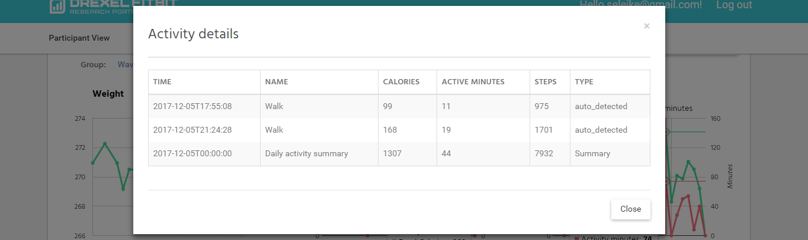
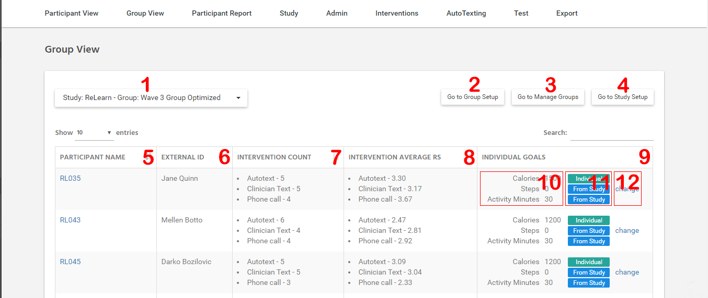

View’s¶
Participant View¶
Главная страница портала. Предназначена для визуализации данных полученных от Fitbit. Также содержит эллементы для удобного выбора Participant и список их Intervention.

Figure 8 - Participant View Page Interface
- Описание Participant View Page Interface:
- краткая учетная информация пользователя, также содежит ссылку на Group View (LINK!)
- выбор study к группе которого привязан пользователь
- выбор координатора Study Group к которой привязан пользоватеоей
- список всех Participants выбранного Clinician в данной Study
- выбор временного периода для отображения данных
- график веса, полученного от Fitbit
- график еды, полученной от Fitbit. Также есть возможность просмотреть детализированный список еды за этот день по щелчку на соответсвующем дне графика. (смотрите Figure 2)
- график активности полученный от Fitbit. Также есть возможность просмотреть детализированный список активности за этот день по щелчку на соответсвующем дне графика. (смотрите Figure 3)
- ссылка на настройки Inteventions
- таблица Inteventions пользователя
- ссылка на обработку данного Intevention, с пометкой о том был ли обработан Intevention (зеленое) или нет (красное)
Note
В таблице Inteventions на данной странице не отображатся Inteventions типа Autotext, время отправки которых еще не наступило, и Inteventions типа Notification
{kind=link}
Figure 9 - Окно с детальным логом еды, вызванное при клике на графике калорий
{kind=link}
Figure 10 - Окно с детальным логом активности, вызванное при клике на графике активности
Study Coordinator View¶
Страница содержит агрегированные данные полученные от Fitbit, а также агрегированные данные о Inteventions пользователя.
Note
Данные выбираются для периода выбранного в элементах управления страницей, по умолчанию это период охватывает 30 дней заканчивая текущим днем.
- Все данные представлены в виде трех таблиц:
- Average data
- Block data
- Raw data
Таблица Average Data – содержит данные общие данные о интервеншенах пользователя.
- Колонки таблицы Average Data:
- Intervention - тип Intervention
- Cost - относительная стоимость Intervention, настраивается на странице Edit study (link)
- Count - Количество интервеншенов этого типа
- RsAvg - средний RS интервеншенов этого типа), данные значения должны соответсвовать данным для расчета в expression для групп с групповой оптимизацией, а также отображаемые на странице Group View (для корректного отображения должнен быть выбран период охватывающий все интервеншены)
- WeightedRsAvg - среднее значение (DecayWeight ^ Number) интервеншенов этого типа, где DecayWeight константа, настраивается на странице Edit study(link), Number – порядковый номер каждого интервеншена отсортированного по дате в порядке убывания начиная с нуля.
Таблица Block data - список интервеншенов с соответсвующими им временными периодами (блоками), с общими данными для каждого.
- Колонки таблицы Block data:
- Date - дата intervention
- Duration - длительность intervention в целых днях, начиная с даты intervention назад, включительно. (Например intervention 10/27/2017 и длительностью 4 включает 4 дня: 10/27/2017, 10/26/2017 , 10/25/2017 , 10/24/2017)
- Weekend Days - количество дней которые пришлись на выходные
- Intervention - тип intervention
- RS - reward score для этого intervention (средний RS среди всех дней связанного периода), данные значения должны соответсвовать данным для расчета в expression для групп с индивидуальной оптимизацией (для корректного отображения должнен быть выбран период охватывающий все интервеншены)
- Weight (for RS) - соответсвует WeightedRsAvg из таблицы Average Data, но для конкретного Intervention
Таблица Raw data - агрегированные по дням данные полученные от Fitbit.
Note
Данные в данной таблице указываются только для тех дней для которых получены хоть какие то данные от Fitbit.
- Колонки таблицы Raw Data:
- Date – дата за каторую агрегируются данные
- Weight – последний вес полученный от Fitbit
- Food logged – количество еды (записей) полученных от Fitbit
- Food calories logged – суммарная калорийность еды полученной от Fitbit
- Calories goal – цель по калориям, устанавливается в настройках Study к группе которого привязан пользователь
- Steps – количество шагов полученных в активности от Fitbit
- Steps goal - цель по шагам, устанавливается в настройках Study к группе которого привязан пользователь
- Activity minutes – сумма минут активности полученных в активности от Fitbit
- Activity minutes goal - цель по минутам активности, устанавливается в настройках Study к группе которого привязан пользователь
- PA goal freq – устнавливается значение 1 если в этот день данные по активности больше или равны цели соответствующего типа активности, тип активности выбирается в зависимости от значения StudyAlgorithm (устанавливается в настройках Study к группе которого привязан пользователь)
- Weight freq – устанавливается значение 1 если полученны данные о весе за этот день
- Food trak freq – устанавливается значение 1 если количество записей еды за этот день больше нуля
- Cal goal freq – устанавливается значение 1 если сумма калорий всех записей еды за этот день находится в промежутке между Minimum Reported Calories и Calories Goal (Minimum Reported Calories устанавливается в настройках Study к группе которого привязан пользователь)
- Weight Loss (1 day) - потеря веса за этот день (относительно предыдущего дня, 0 если нет данных за этот или предыдущий день)
- Weight Loss (7 day) - потеря веса за эту неделю (относительно даты неделю назад, 0 если нет данных за этот день)
- Weight Loss (14 day) - потеря веса за две недели (относительно даты две недели назад, 0 если нет данных за этот день)
- RS – Reward Score за этот день, данное значение хранится в базе данных и обновляется при каждом получении данных от Fitbit за этот день на основе RS expression указанного для Study к группе которого привязан пользователь, если пользователь не привязан ни к одному Study, то RS не может быть расчитан. Данные значения RS используются при расчете среднего RS для Intervention (для корректного отображения должнен быть выбран период охватывающий все интервеншены).
Warning
Если Participant не состоит ни в одной Study Group, то RS для него не может быть расчитан.
Group View¶
Страница Group view содержит список всех пользователей Study Group, с агригированными данными интервеншенов и индивидуальными целями пользователя.
{kind=link}
Figure 11 - Group View Interface
- Описание Group View Interface:
- элемент для выбора выбор группы
- ссылка на редактировнаие группы
- сссылка на управление всеми группами Study к которой привязана группа
- ссылка на редактирование Study к которой привязана группа
- колона таблицы с именем пользователся, так же является ссылкой на страницу Participant view(LINK!)
- уникальный идентификатор пользователя, устанавливается на странице редактирования пользователя, может быть пустым
- колонка указывающая список всех типов интервеншенов с количеством интервеншенов каждого типа, учитываются только интервеншены которые были созданы когда пользователь находился в текущем study.
- колонка указывающая список всех типов интервеншенов с средним RS для каждого типа, учитываются только интервеншены которые были созданы когда пользователь находился в текущем study. Данные должны соответсвовать данным на странице Study Coordinator View (должен быть выбран период охватывающий все интервеншены) (LINK!)
- колонка отображающая индивидуальные цели пользователя, а также эллементы управления ими
- указывает текущие цели пользователя по калориям и активности
- указывает источник целей (индивидуальные или Study)
- элемнт для вызова меню управления индивидуальными целями
{kind=link}
Figure 12 - Окно управления индивидуальными целями
- Описание Окно управления индивидуальными целями:
- индивидуальная цель по калориям, если не уставнолена 0
- цель по калориям соответсвующая цели по калориям Study в группе оторого состоит пользователь
- цель по калориям полученная от фитбит, может менятся более 10 раз за день подробнее можно почитать на странице фитбит (ссылка)
- попытка принудительного получения цели по калориям от фитбит
- выбор типа цели по калориям который будет использоваться для пользователя
- индивидуальная цель по шагам, если не уставнолена 0
- выбор типа цели который по шагам будет использоваться для пользователя; индивидуальная цель по минутам активности, если не уставнолена 0
- индивидуальная цель по минутам активности, если не уставнолена 0
- выбор типа цели по минутам активности который будет использоваться для пользователя
- сохранить изменения
..note :: Цель по калориям создаваемая Fitbit может меняться несколько раз в день, каждый раз огда пользователь добавляет еду через Fitbit. Подробнее (LINK!).